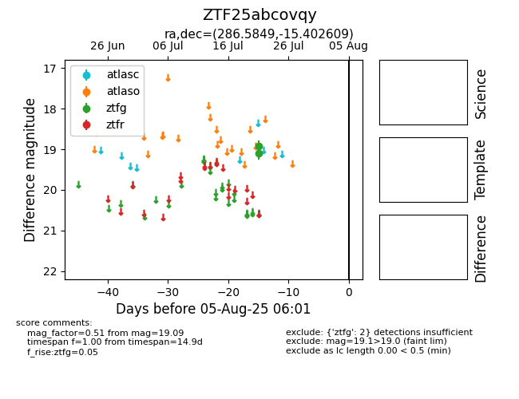

Target ZTF25abcovqy at 2025-08-05 06:01, see:
FINK: fink-portal.org/ZTF25abcovqy
Lasair: lasair-ztf.lsst.ac.uk/objects/ZTF25abcovqy
ALeRCE: alerce.online/object/ZTF25abcovqy
alt names
ZTF25abcovqy (ztf,fink)
coordinates:
equatorial (ra, dec) = (286.5849,-15.40261)
galactic (l, b) = (20.7424,-10.18685)
photometry
last ztfg=19.09
2 ztfg detections
